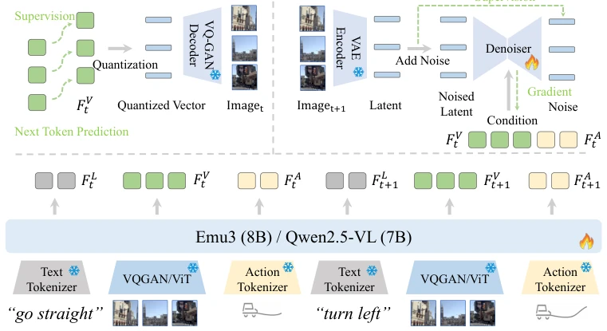
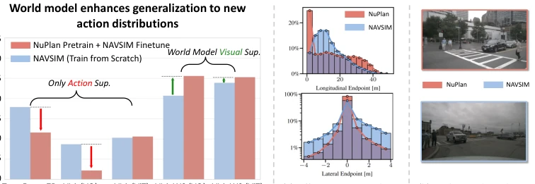
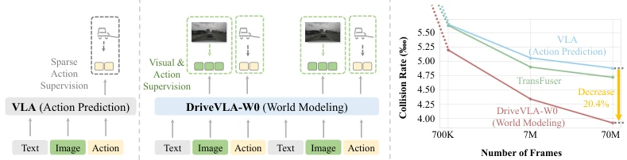
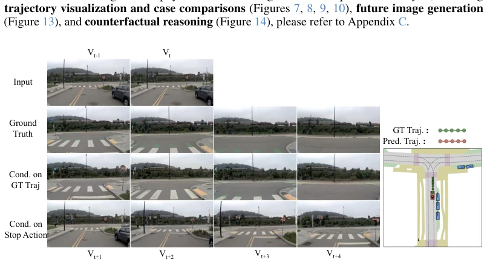
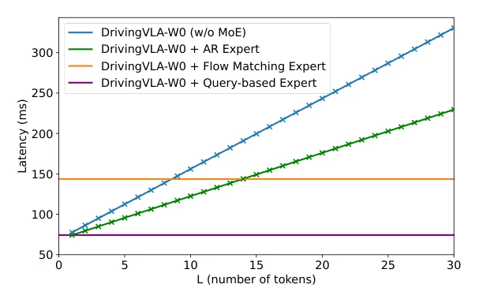
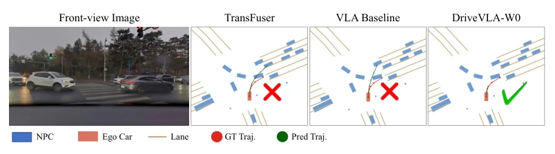
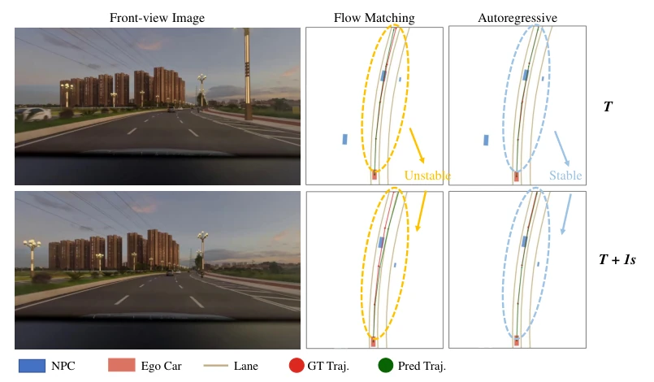
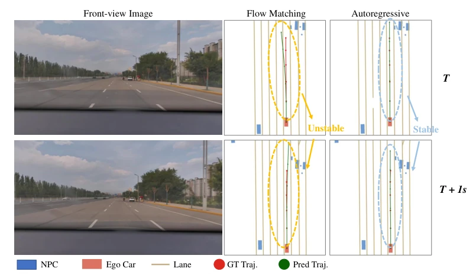
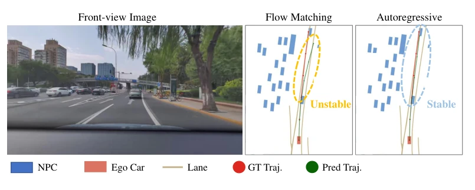
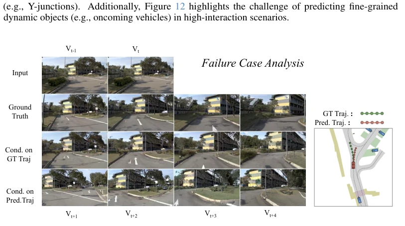

This paper offers a "special remedy" for autonomous driving VLA models. The authors sharply point out that relying solely on Action Supervision cannot sufficiently satisfy large models, leading to a severe "supervision deficit" and wasted model capabilities. DriveVLA-W0 uses a World Model to predict future frames, forcing the model to "understand" physical laws and providing dense self-supervised signals. Although the 70M-frame private dataset is enviable, experiments indeed prove that the data scaling law is amplified, with performance improvements becoming more pronounced as data volume increases. However, although MoE experts are fast, essentially they still treat the large model as a feature extractor; inference latency is optimized but the fundamental compute cost is not resolved. Moreover, the AR decoder surpasses Flow Matching under large data, which is quite counter-intuitive and worth careful consideration. However, reliance on large-scale private data may limit generalization, and whether the open-source community can reproduce it remains a question mark.
研究动机Motivation
自动驾驶 VLA 模型面临“监督赤字”瓶颈。现有 VLA 仅用稀疏动作信号监督高维模型，导致表征能力浪费 (Li et al., 2025b)。TransFuser (Prakash et al., 2021) 等基线在数据量增加时性能饱和，无法利用大规模数据。LAW (Li et al., 2024a) 虽用世界模型，但预测潜在空间而非图像，信号不够稠密。本文旨在解决这一瓶颈，通过预测未来图像提供稠密自监督信号，验证数据缩放定律。现有 BEV 方法依赖几何先验，难以利用非驾驶数据 (Hu et al., 2022)。VLA 虽潜力大，但缺乏稠密监督导致大模型甚至不如小模型 (Li et al., 2025b)。
Autonomous driving VLA models face a "supervision deficit" bottleneck. Existing VLAs only supervise high-dimensional models with sparse action signals, leading to wasted representational capacity (Li et al., 2025b). Baselines such as TransFuser (Prakash et al., 2021) saturate in performance as data volume increases, unable to leverage large-scale data. LAW (Li et al., 2024a) uses a world model but predicts latent space rather than images, so signals are not dense enough. This paper aims to solve this bottleneck by predicting future images to provide dense self-supervised signals, verifying the data scaling law. Existing BEV methods rely on geometric priors, making it difficult to utilize non-driving data (Hu et al., 2022). Although VLAs have great potential, lack of dense supervision causes large models to perform even worse than small models (Li et al., 2025b).
方法Method
整体采用两阶段训练范式。第一阶段预训练 VLA Backbone，联合优化动作损失与世界模型损失，学习稠密表征。针对离散视觉 Token 架构（如 Emu3），采用自回归（AR）世界模型，预测未来图像序列的离散 Token，利用 VQ-GAN 解码器重建图像 (Zheng et al., 2022)。针对连续特征架构（如 Qwen2.5-VL），引入扩散（Diffusion）世界模型，在潜在空间对无噪未来帧进行去噪生成，条件为当前视觉与动作特征 (Bai et al., 2025; Rombach et al., 2021)。推理时，世界模型生成过程被跳过以确保实时性。为解决大模型推理延迟瓶颈，引入轻量级 MoE Action Expert（500M），通过 Joint Attention 机制与大模型高效融合。支持 Query-based、Autoregressive、Flow Matching 三种解码策略 (Liu et al., 2022)。动作 Token 使用 FAST tokenizer 离散化 (Pertsch et al., 2025)。该架构允许在保持大模型表征能力的同时，实现低延迟控制。
Overall, a two-stage training paradigm is adopted. The first stage pre-trains the VLA Backbone, jointly optimizing action loss and world model loss to learn dense representations. For discrete visual Token architectures (e.g., Emu3), an Autoregressive (AR) world model is adopted to predict discrete Tokens of future image sequences, using a VQ-GAN decoder to reconstruct images (Zheng et al., 2022). For continuous feature architectures (e.g., Qwen2.5-VL), a Diffusion world model is introduced to denoise and generate noise-free future frames in latent space, conditioned on current visual and action features (Bai et al., 2025; Rombach et al., 2021). During inference, the world model generation process is skipped to ensure real-time performance. To solve the large model inference latency bottleneck, a lightweight MoE Action Expert (500M) is introduced, efficiently fused with the large model via a Joint Attention mechanism. It supports three decoding strategies: Query-based, Autoregressive, and Flow Matching (Liu et al., 2022). Action Tokens are discretized using the FAST tokenizer (Pertsch et al., 2025). This architecture allows achieving low-latency control while maintaining large model representational capacity.

Figure 2: The architecture of DriveVLA-W0, which achieves world modeling in two ways: (a) an AR World Model that predicts discrete visual tokens, and (b) a Diffusion World Model that denoises latent representations conditioned on multimodal inputs.

Figure 4: World modeling unlocks generalization with data scaling. Our world model turns pretraining from a detriment for sparse-supervision baselines (red arrows) into a benefit for our VLA-W0s (green arrows), enabling positive knowledge transfer across datasets with similar visuals (b) but different action distributions (a). Figure (a) is from Dauner et al. (2024).
实验Experiments
在 NAVSIM v1/v2 及 70M 帧私有数据集上测试。指标包括 PDMS、碰撞率、ADE。DriveVLA-W0 在 NAVSIM 上超越 BEV 和 VLA 基线（如 AutoVLA, ReCogDrive, Li et al., 2025b; Zhou et al., 2025c）。70M 数据下，世界模型显著提升性能（VQ 模型 ADE 降 28.8%）。消融显示 Vision-Action 序列优于纯 Vision。Action Expert 实验发现大数据下 AR 解码器反超 Flow Matching，揭示缩放定律反转。在 NuPlan 预训练后微调 NAVSIM，世界模型模型表现更好，证明泛化性 (Dauner et al., 2024; Caesar et al., 2021)。MoE 专家将延迟降至 63.1%。对比 TransFuser (Prakash et al., 2021) 等，本方法在单摄像头下表现更佳。
Tested on NAVSIM v1/v2 and a 70M-frame private dataset. Metrics include PDMS, collision rate, and ADE. DriveVLA-W0 surpasses BEV and VLA baselines on NAVSIM (e.g., AutoVLA, ReCogDrive, Li et al., 2025b; Zhou et al., 2025c). Under 70M data, the world model significantly improves performance (VQ model ADE drops by 28.8%). Ablation shows Vision-Action sequences outperform pure Vision. Action Expert experiments find that under large data, the AR decoder surpasses Flow Matching, revealing a scaling law reversal. Fine-tuning NAVSIM after pretraining on NuPlan, the world model model performs better, proving generalization (Dauner et al., 2024; Caesar et al., 2021). MoE experts reduce latency to 63.1%. Compared to TransFuser (Prakash et al., 2021) and others, this method performs better under single camera.

Figure 1: World modeling as a catalyst for VLA data scalability. (a): Unlike standard VLAs trained solely on action supervision, our DriveVLA-W0 is trained to predict both future actions and visual scenes. (b): This world modeling task provides a dense source of supervision, enabling our model to better harness the benefits of large-scale data.

Figure 5: Action-Conditioned Simulation. We demonstrate the utility of our world model as a simulator capable of generating diverse futures based on control signals. In the recorded ground truth, the ego vehicle maintains speed and drives forward. By conditioning the model on a counterfactual "decelerate" action, the world model generates a distinct visual outcome where the vehicle slows down.

Figure 6: Latency analysis. The latency of the AR expert and the VLA baseline scale linearly with the number of generated tokens L, while the flow matching and query-based experts maintain a constant inference time.

Figure 7: World modeling improves trajectory planning in complex scenarios. TransFuser and VLA baseline often fail in such interaction scenarios due to their weak ability to predict scene dynamics. However, with the support of world modeling, VLA-W0 possesses strong predictive capabilities, thereby avoiding collision in this type of scenario.

Figure 8: Comparison of flow matching and autoregressive action expert. The trajectory generated by the flow matching action expert is relatively unstable, with jumps occurring between adjacent frames, while the AR action expert generates much more stable trajectories.

Figure 9: Comparison of flow matching and autoregressive action expert. The trajectory generated by the flow matching action expert is relatively unstable, with jumps occurring between adjacent frames, while the AR action expert generates much more stable trajectories.

Figure 10: Comparison of flow matching and autoregressive action expert. The trajectory generated by the flow matching action expert is relatively unstable, and it may go beyond the drivable area. The AR action expert generates much more stable trajectories.

Figure 11: Failure case analysis: ambiguity in driving commands. We illustrate a failure mode stemming from the ambiguity of coarse-grained navigation instructions. In this Y-shaped intersection, the model receives a generic “go straight” command. Due to the splitting road topology, this instruction is ambiguous, as it maps clearly to neither the left nor the right branch. Consequently, the model fails to commit to a valid lane, hesitantly driving straight into the fork area (as shown by the predicted red trajectory). This highlights a limitation in the current NAVSIM benchmark, where the discrete command set (restricted to simple Turn Left/Straight/Right) lacks the granularity to resolve ambiguities in complex geometries. Note: To faithfully represent the visual information available to t